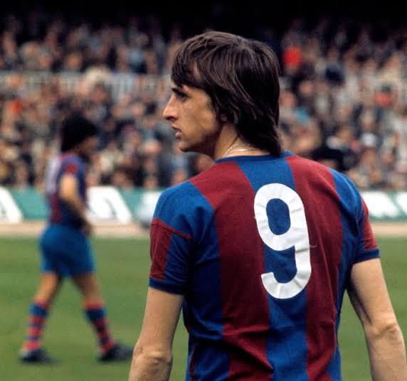
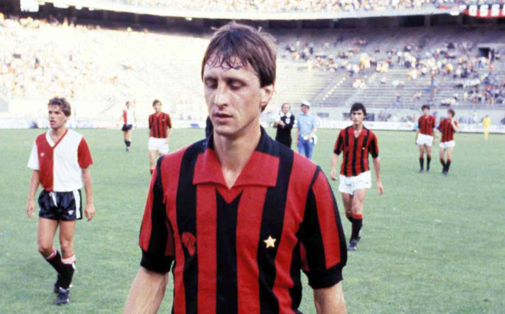
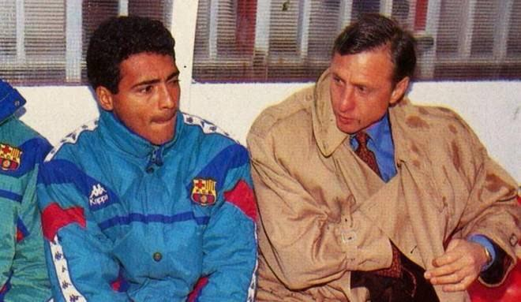
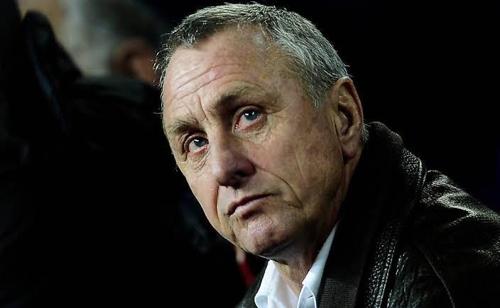

Hendrik Johannes Cruijff, mais conhecido como Johan Cruijff, Johan Cruyff, ou simplesmente Cruijff (Amsterdã, 25 de abril de 1947 – Barcelona, 24 de março de 2016) foi um futebolista e técnico neerlandês que atuava como meia e atacante. E ainda que transcorridos mais de quarenta anos após a Copa do Mundo de 1974, os Países Baixos, Michels e Cruijff sintetizam a última revolução tática na história do futebol e serão para sempre lembrados como sinônimos do chamado futebol total, no qual os jogadores de linha se sentiam à vontade ao desempenhar todas as posições. Visto como um pensador do futebol, costumava enfatizar a rapidez de pensamento tanto quanto a rapidez do corpo: sua característica velocidade era descrita pelo próprio como uma questão de saber a hora certa de começar a correr. Cruyff foi escolhido pelo IFFHS o maior jogador europeu do século XX, e o segundo maior do mundo, atrás somente de Pelé. Para o colunista Maurício Barros, da ESPN Brasil, Cruyff é o maior da história do futebol na soma jogador-treinador, mesmo sem ter ganho nenhuma Copa do Mundo.
Cruyff foi praticamente criado no Ajax: seu pai, Hermanus, dono de uma mercearia, fornecia frutas ao clube, embora a paixão inicial de Johan e do irmão Henny fosse o beisebol. Os vínculos continuaram por parte de mãe, Petronella, que foi trabalhar como faxineira do clube após tornar-se viúva (quando o garoto Cruyff, que frequentava os vestiários já com quatro anos, possuía doze). Firmando nos juvenis sob Jany van der Veen (um dos poucos a angariar respeito de Cruijff, que futuramente, ao gerenciar o Ajax, o recontrataria para as divisões de base), o garoto estreou em novembro de 1964 no time adulto, contra o GVAV, em derrota de 3–1, sendo justamente dele o único gol do Ajax. Com a chegada um ano depois de Michels, que aceitou o jogo ditado por Cruyff, os títulos viriam em série: o Ajax seria na primeira temporada com ambos trabalhando juntos, a de 1965/66, campeão neerlandês, o que se repetiria consecutivamente outras duas vezes. Outros três títulos no campeonato nacional viriam em espaço de cinco anos. Cinco Copas dos Países Baixos também seriam levantadas no período. Em 1967, Cruijff já despertava atenção do futebol espanhol, tendo sua contratação pelo Real Madrid sugerida pelo treinador Miguel Muñoz ao presidente madridista Santiago Bernabéu. Naquela época, eliminar o Benfica significava eliminar o mais expressivo clube da década nas competições europeias: em tempos em que disputar constantemente a Taça dos Campeões Europeus (atual Liga dos Campeões) não era mesmo aos clubes mais fortes algo comum, uma vez que somente campeões nacionais e o campeão europeu vigente participavam da competição, o clube lisboeta conseguiu: obteve treze campeonatos portugueses em dezessete disputados e esteve nove vezes na década de 1960 na principal competição clubística do continente. Cruyff, Michels e o Ajax responderam logo na edição seguinte, igualando o rival e superando-o em seguida: foram três títulos consecutivos, nas edições de 1971, 1972 (ano em que ele foi pela segunda vez artilheiro do campeonato, e em que o time ganhou todos os torneios importantes que disputou) e 1973, respectivamente contra o Panathinaikos (time então treinado pelo lendário Ferenc Puskás), Internazionale e Juventus (tendo passado no caminho também pelo posterior igualmente tricampeão seguido Bayern Munique e pelo Real Madrid). Pelos títulos de 1971 e 1973, seria premiado com a Bola de Ouro da France Football, sendo o primeiro neerlandês a recebê-la. Os dois últimos títulos europeus foram já sem Michels, que saíra para o Barcelona após a primeira conquista continental. O Ajax também venceu a Copa Intercontinental de 1972, sobre o Independiente, derrotando os argentinos por 3–0 em Amsterdã após sair de Avellaneda com um empate de 1–1, com um gol dele. O clube não venceu outras Intercontinentais pois declinou em participar: a anterior, de 1971, foi o Panathinaikos quem enfrentou os uruguaios do Nacional;[30] em 1973, quando a disputa seria outra vez contra o Independiente, o Ajax voltou a ceder a vaga para o vice-campeão europeu, desta vez a Juventus.
Cruyff Chegou ao Barça na negociação mais cara do futebol até então, por cinco milhões de florins, preço tão alto que o governo espanhol não aprovou a transferência.
Só conseguiu ser levado porque foi registrado oficialmente como uma peça de máquina de agricultura.
Cruijff justificou o alto investimento: marcou duas vezes na estreia e reconduziu o Barça a um título espanhol que não vinha havia 14 anos, quando ainda jogavam pelo clube Luis Suárez, László Kubala, Zoltán Czibor, Sándor Kocsis e Evaristo.
A campanha incluiu uma vitória de 5-0 em pleno clássico com o Real Madrid em pleno estádio Santiago Bernabéu, oito dia após Cruijff tornar-se pai de Jordi Cruijff - batizando o filho com nome catalão quando esse idioma ainda era proibindo na Espanha, o que burlou por registra-lo nos Países Baixos.
Eleito o melhor jogador do campeonato, receberia sua terceira Bola de Ouro pelo feito.
A temporada fora em estado de graça também por ele ter conseguido, paralelamente, classificar a Seleção Neerlandesa à Copa do Mundo de 1974 - os Países Baixos não disputavam o torneio desde a sua segunda participação, na edição de 1938.

Fizera sua despedida em outubro de 1978, com a camisa do Ajax, em amistoso contra o clube que havia sido o sucessor imediato da equipe na hegemonia da Copa dos Campeões: o Bayern Munique, que conquistaria o troféu também três vezes seguidas após o último do Ajax.
Os alemães venceriam por 8–0.
Este acabaria, entretanto, sendo um final provisório: em virtude de investimentos desastrosos em criações de porcos, que o fariam perder milhões, Cruijff se viu forçado a voltar a jogar.
Um dos jogadores do Dips teria dito que o clube, ao contratar o neerlandês, deveria ter pago também por um estoque de algodão para que todos ali tivessem algo mais para tapar os ouvidos.
Voltou a se apaixonar pelo esporte, mas cansou-se dos EUA, onde, excluído do grupo no Diplomats, anunciara que se limitaria apenas a fazer gols (e os fez).
Sairia por conta de crise financeira do próprio clube.
a expectativa por sua vinda impactou no desempenho do clube inglês, que chegou a emendar uma sequência de vitórias e até anunciaria a contratação como efetivada.
Com problemas físicos, não passou de dez jogos e dois gols marcados, sem conseguir o acesso.
Cruijff ainda participou de um jogo pelo Milan em torneio amistoso organizado por Silvio Berlusconi, mas saiu vaiado após atuação apagada por conta, segundo ele, de lesão comunicada previamente aos dirigentes milanistas, mas consentidas por estes.
Sem se fincar no Milan, retornou aos Países Baixos e ao Ajax - inicialmente, para ser assistente do técnico Leo Beenhakker, mas logo inscrito como jogador, provocando ceticismo - não só por nunca ter sido uma unanimidade em casa (onde era acusado de "desbocado" e "dinheirista" -
houve relatos de que ele cobrava para dar autógrafos), mas também pela idade de 34 anos e seu físico já alquebrado.
O público lotava os estádios para o ver, acreditando que estava perto da aposentadoria, e as câmeras de TV muitas vezes não conseguiam seguir suas jogadas fulminantes.
Em suas duas temporadas no retorno ao Ajax, seria campeão neerlandês (e na segunda, também campeão da Copa nacional), convivendo com os jovens Marco van Basten e Frank Rijkaard.
Também causou furor ao inventar a cobrança em dois lances de um pênalti: em outra partida, ao cobrar a penalidade, apenas tocou a bola para a frente, deslocando o goleiro enquanto um companheiro corria atrás da bola para repassar-lhe para que concluísse sem obstáculos para as redes.

Estreou pelos Países Baixos em 1966, aos dezenove anos, em jogo contra a ainda respeitada Hungria, em partida válida pelas eliminatórias para a Eurocopa 1968, logo marcando um gol, embora a impressão final tenha sido agridoce: ele também foi expulso, sendo o primeiro atleta a sofrer essa punição na história da seleção. A indisciplina pesaria para que chegasse a ficar um ano sem defender o país. Quando voltou, ajudaria a transformar a seleção, então modesta, em uma potência mundial. Mas isso ainda demoraria a ocorrer: o país não se classificaria para as fases finais da própria Euro 1968 e também da de 1972, e o mesmo para a da Copa do Mundo de 1970 - cujas eliminatórias deram-se em um período em que ele ainda não havia se firmado na Oranje, que, para o mundial do México, perdeu a vaga para a Bulgária. Com a base titular da Seleção formada pelos jogadores dos continentalmente vitoriosos Feyenoord (Wim Jansen, Willem van Hanegem e Wim Rijsbergen) e Ajax (Arie Haan, Ruud Krol, Johan Neeskens, Johnny Rep e Wim Suurbier, além do próprio Cruijff, já barcelonista no mundial), que no período entre 1970 e 1974 deixaram a taça da Copa dos Campeões da UEFA nos Países Baixos, o conjunto, ainda que desunido - os jogadores de um time não costumavam conversar com os do rival, e Cruijff não esconderia isso no livro Futebol Total, que ele publicaria ainda naquele ano - finalmente obteve a classificação para a Copa do Mundo de 1974. O chamado "futebol total" do Ajax transfomar-se-ia para os olhos do mundo no "Carrossel Holandês" no torneio: um grupo de grande talento que trouxe inovações para a época como a valorização da troca de passes e posse de bola, a linha defensiva de impedimento e marcação firme, tentando roubar a bola ainda na intermediária adversária. Cruijff era um jogador à parte no elenco laranja (cuja equipe-base era formada também pelo goleiro Jan Jongbloed e pelo atacante Rob Rensenbrink, de outros clubes), o que se traduzia inclusive no uniforme: enquanto a numeração do restante do elenco foi escolhida conforme a ordem alfabética neerlandesa dos sobrenomes, fazendo o goleiro titular Jongbloed jogar com o número 8, Cruijff pôde utilizar o seu número favorito, o 14. espírito um tanto "mercenário" não foi uma exclusividade sua na Copa, contagiando todo o elenco, que passava mais tempo discutindo termos, condições e prêmios do que debatendo sobre táticas. Mesmo um dos únicos que não reclamaram do já alto prêmio de 25 mil florins dado aos jogadores pela classificação à final, Neeskens, declararia que seu objetivo no mundial era melhorar a própria cotação "no mercado futebolístico internacional". Um dos motivos para que Jan van Beveren, goleiro do PSV Eindhoven na época e tido como o melhor neerlandês da história na posição, ficasse de fora da Copa, mesmo tendo sido o titular nas eliminatórias, foi justamente as suas críticas a esse comportamento de seus colegas, sendo ainda grande desafeto de Cruijff. No mundial, o país lideraria seu grupo na primeira fase após vencer Uruguai (2–0) e Bulgária (4–1, uma vingança contra a seleção que havia tirado a vaga nos neerlandeses no mundial anterior) e empatado em 0–0 com a Suécia - em que ele passou a bola por trás de suas pernas após ameaçar cruzar, deixando o zagueiro sueco que tentara impedir o suposto cruzamento, Jan Olsson, chutar o ar. Quando Cruijff faleceu, Olsson declararia sentir orgulho por aquele lance, em declaração ao jornal The Times: "Johan Cruijff deu-me o momento mais orgulhoso de minha carreira. Os neerlandeses mantiveram uma pressão inicial, buscando pegar a bola já na defesa alemã, deixando inclusive Franz Beckenbauer sem alternativas a partir do meio de campo em certos momentos. No restante do jogo, porém, Cruijff deixar-se-ia anular facilmente por Berti Vogts e os alemães conseguiriam virar a partida e ficar com a taça. A explicação para a sua atuação aquém do esperado estava na bastante mal-dormida noite anterior: Cruijff, que prezava a família segura que perdera aos doze anos, passara a véspera da partida procurando convencer sua esposa, Danny, de que era falsa a notícia divulgada pelo jornal alemão Bild-Zeitung de que ele teria feito festa no hotel regada a champagne e garotas de programa. Mas, de fato, acabou não indo à Argentina, o que foi por muito tempo interpretado como um protesto à ditadura militar naquele país; trinta anos depois, foi revelado outro motivo: ele afirmou que, já em 1978, sofrera uma tentativa de sequestro e, temendo novos ataques, contratou seguranças particulares por um ano e meio. A confusão conjugal que tivera pouco antes da final de 1974 também teria-lhe motivado a não ir para a Copa de 1978.
Planejou nos blaugranas o mesmo trabalho desde as divisões de base que fizera no Ajax, priorizando a aprendizagem dos jogadores em vez da obtenção de resultados imediatos. Sua maior crise no período em que ficaria no Barça não seria resultados dos gramados e sim um infarto que quase o matou, em 1991, muito provavelmente consequência dos cigarros que inveteradamente fumava; Decadente no torneio nos anos 1980, em que o conquistara apenas uma vez (em 1985), com Cruijff o Barça levaria a liga quatro vezes seguidas, a partir de 1991. Antes disso, a equipe já havia levado a Copa do Rei de 1990 e, no ano anterior, a Recopa Europeia. Em 1992, o clube seria pela primeira vez campeão da Copa dos Campeões da UEFA, batendo na final a Sampdoria, o mesmo adversário vencido três anos antes na Recopa. O único gol foi marcado por um compatriota trazido por ele, Ronald Koeman. Favorito, o time de Cruijff acabaria goleado por 0–4. O Barcelona não voltaria mais a ganhar títulos por um tempo e ele acabaria saindo em 1996, não sem antes afastar do clube o próprio Romário e o búlgaro Hristo Stoichkov, cujas personalidades também fortes foram de encontro com a dele. Outras estrelas mundiais que saíram, por não se adequarem ao posicionamento que Cruijff escolhia para elas, foram o inglês Gary Lineker (em 1989) e o romeno Gheorghe Hagi (em 1996). O dinamarquês Michael Laudrup foi outro a se aborrecer com o técnico, por ter sido o estrangeiro escolhido para não ser escalado na final da Liga dos Campeões de 1994 (devido ao limite de três estrangeiros existente na época, Cruijff teve de usar apenas Romário, Stoichkov e Koeman), aceitando logo depois proposta do Real Madrid. Sua saída do cargo de técnico do Barcelona foi turbulenta: quando soube que seria substituído, jogou uma cadeira na porta do escritório do cúpula barcelonista e vociferou que "Deus o punirá por esta ação, da mesma forma que o puniu antes!", em referência a um neto recém-falecido do presidente. A torcida ficou do lado do neerlandês, homenageando-lhe sob forma de aplausos ao filho Jordi Cruijff quando este era substituído. A despeito da saída conturbada do FC Barcelona|Barcelona, sua influência tornou-se mais forte no ali do que na terra de origem, o que incluía poder nos bastidores: o clube contratou Frank Rijkaard em 2003 por indicação dele. Mesmo sem o mesmo reconhecimento nos Países Baixos, sua bênção também foi aceita na Seleção Neerlandesa, que contratou outro pupilo seu, Van Basten, como técnico em 2004.[65]
Se o Ajax deixara os projetos iniciados por Cruijff de lado, no Barcelona, onde ele procurou realizar a mesma obra, foi diferente: atualmente, a academia barcelonista conta com doze equipes, cada uma com até 24 jogadores.
"Talvez o maior legado de Cruijff seja a metodologia que ele trouxe para o clube", disse José Ramón Alexanko, membro do chamado Dream Team campeão europeu sob o comando dele em 1992.
Segundo o próprio Cruijff, a filosofia a ser seguida era a de que, como há sempre uma pessoa por trás do jogador, ela "precisa ser educada na técnica do jogo, no caráter e na inteligência".
Com o progresso das canteiras do clube iniciado por ele, o Barcelona lançaria após a sua saída também Carles Puyol, Pepe Reina, Thiago Motta, Albert Luque, Xavi Hernández, Andrés Iniesta, Víctor Valdés, Oleguer Presas, Lionel Messi, Cesc Fàbregas, Gerard López, Mikel Arteta, Luis García, Giovani dos Santos, Bojan Krkić, Gerard Piqué, Fran Mérida, Sergio Busquets, Pedro, dentre outros.
Guardiola tornaria-se técnico de grande sucesso comandando alguns destes jovens, promovendo um jogo ofensivo e de toques de bola independentemente da força do adversário e do local da partida, no que ele atribui aos ensinamentos que teve do neerlandês: "Ele foi a bandeira.
Seleção Espanhola de Futebol seria campeã da Copa do Mundo de 2010 utilizando como base os jogadores e a filosofia da posse de bola do Barcelona (Puyol, Xavi, Iniesta, Piqué, Valdés, Busquets, Pedro, Fàbregas e Reina estiveram no elenco campeão;
os quatro primeiros foram titulares, e Puyol - na semifinal - e Iniesta - na final - marcaram os gols decisivos), promovidos por ele, a ponto de dizer-se que tal estilo de jogo, do Barcelona e da Espanha, seriam uma versão latina da Laranja Mecânica de 1974.

Alem do campo de futebul Cruijff tem grandes feitos como batizar um planetóide, o de número 14282. Em 8 de julho de 1974, semanas após o vice-campeonato na Copa do Mundo de 1974, Cruijff foi condecorado com a classe de cavaleiro da Ordem da Casa de Orange. Ele também era membro honorário da Real Associação de Futebol dos Países Baixos e do Ajax. Foi eleito em 2004 o sexto maior neerlandês da história, estando à frente de nomes como Anne Frank, Rembrandt e Vincent van Gogh. Além do futebol, apreciava também jogar golfe. Na década de 1970, ele chegou a gravar uma música de relativo sucesso nas paradas neerlandesas, "Oei Oei Oei (Dat Was Me Weer een Loei)" - em português, "Oi Oi Oi (Que belo chute)", que foi relançada após sua transferência para a Espanha, onde foi ainda mais popular. Seus maiores ídolos musicais eram Nat King Cole, The Beatles e Richard Clayderman. ela me mantém no caminho certo". O casal escandalizava a conservadora sociedade espanhola nos tempos franquistas, em que agiam como jovens europeus modernos, fumando e usando cabelos compridos (no caso de Cruijff) e minissaia (no caso da mulher). Teve três filhos com ela: Chantal, Susila e Jordi. filho Jordi Cruijff nasceu de cesariana para que o pai pudesse estar em campo pela primeira vez em um clássico entre Barcelona e Real Madrid, nascendo oito dias antes da partida, válida pelo returno da temporada espanhola de 1973-74 (no primeiro turno, Johan não pôde jogar). Falava espanhol com sotaque catalão, exagerando no som do "l". Ele também falava, além do neerlandês materno, inglês (que aprendeu como autodidata com os técnicos britânicos que passaram pelo Ajax na década de 1950) e compreendia catalão e alemão.
Em 22 de outubro de 2015, Cruijff anunciou oficialmente que foi diagnosticado com câncer de pulmão.
Morreu vitimado pela doença, em Barcelona, em 24 de março de 2016Sua morte ocorreu em período de data FIFA, rendendo minutos de silêncio imediatos, ou ainda um minuto de aplausos ao longo do minuto 14 de partidas, desde a um jogo entre a Argentina e Chile em Santiago, na América do Sul, ao clássico de Roterdã, entre o velho rival Feyenoord e Sparta.
No dia seguinte, houve partida da seleção neerlandesa em Amsterdã, contra a França, repetindo as homenagens ao longo do minuto 14, em que a partida foi paralisada pela organização.
O jogo foi no estádio do Ajax; a partida partida realizada pelo clube no local, em 3 de abril, teve homenagem similar, além de cortejo proveniente do bairro proletário de Betondorp (onde Cruijff crescera) com faixas e imagens do ídolo e participação de alguns ex-jogadores como Edwin van der Sar e Marc Overmars.

frase dita à revista FourFourTwo, em setembro de 2009.